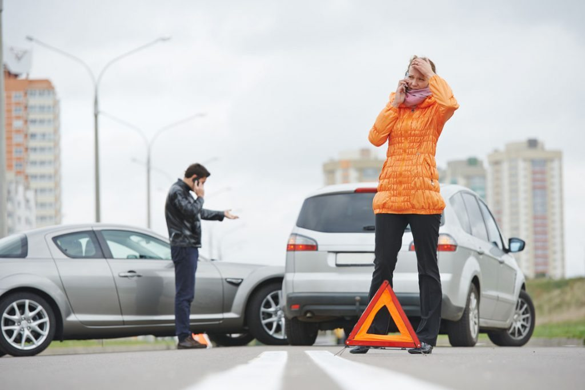

Nossos valores e ideais que nos movem, todos os dias, para oferecer a você produtos e serviços que proporcionem mais tranquilidade, segurança e conveniência.
4FourSafe Seguros - Seguro Residencial
Seguro Residência
Tenha a cobertura de perdas e danos causados por incidentes onde você mora. É assim: você paga um valor e caso algo aconteça com a sua casa, a gente paga uma indenização para te ajudar nesses momentos.
Olha um exemplo: deu um curto-circuito e seus aparelhos elétricos foram danificados. Se o seu Seguro Residencial tiver a cobertura de Danos Elétricos, você recebe o valor combinado para repor os bens..
Nossa superdica
Nosso Seguro Residencial oferece gratuitamente serviços de encanador, chaveiro, eletricista, etc.
Se você fizer as contas, verá que vale muito mais a pena fazer um seguro do que pagar por esses serviços em caso de emergência. Se preferir, também temos assistências opcionais para você, sua casa e seus bens e seu pet.
Preço baixo
Temos Seguro Residencial com parcelas a partir de R$ 15 por mês e você ainda ganha desconto se contratar por mais de um ano..
4FourSafe Seguros - Seguro Automovéis
Seguro Automovél
No trânsito, estamos sujeitos a todo tipo de imprevisto. Acidentes, panes, roubos e furtos podem acontecer a qualquer momento, por mais cauteloso que a gente seja.
Por isso é tão importante você contratar um Seguro Auto. Fique por dentro das vantagens e viva numa boa, sem se preocupar com o que pode acontecer.
Pacotes de Assistências completos
Você pode escolher os pacotes de assistências e ter a possibilidade de receber garantias diferenciadas como Motorista amigo, Reboque ilimitado e Carro substituto.
Coberturas diferenciadas

Você conta com coberturas diferenciadas para danos causados aos pneus/pintura e eventos da natureza.
4FourSafe Seguros - Saúde
Orientação Médica e Telefônica
Profissionais da área da saúde à disposição 24 horas por dia, para dar orientações por telefone quanto a melhor providência a ser tomada em situações de emergência, entre outras.
São mais de 10.000 farmácias em todo o Brasil . E até 85% de desconto em medicamentos e dermocosméticos.
Atendimento pré-hospitalar
Para os casos de emergência, identificados durante a Orientação Médica Telefônica, uma ambulância poderá ser enviada até o local em que o segurado estiver para fazer o atendimento, e se necessário leva-lo para um hospital da rede referenciada.
Seguro Viagem
Diversos serviços que podem ser utilizados em caso de doenças súbitas ou acidentes ocorridos em viagens.